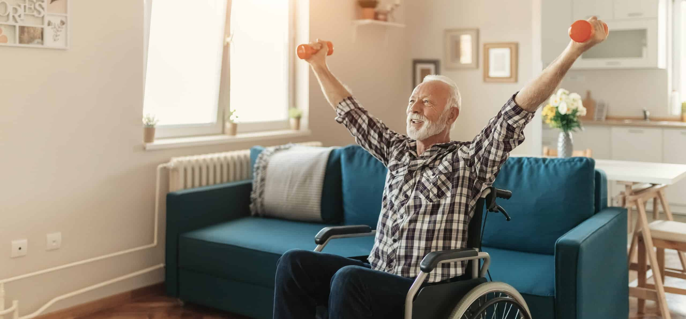
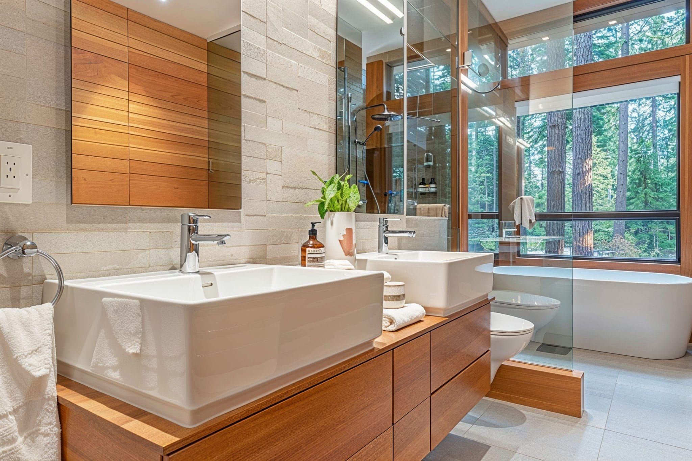
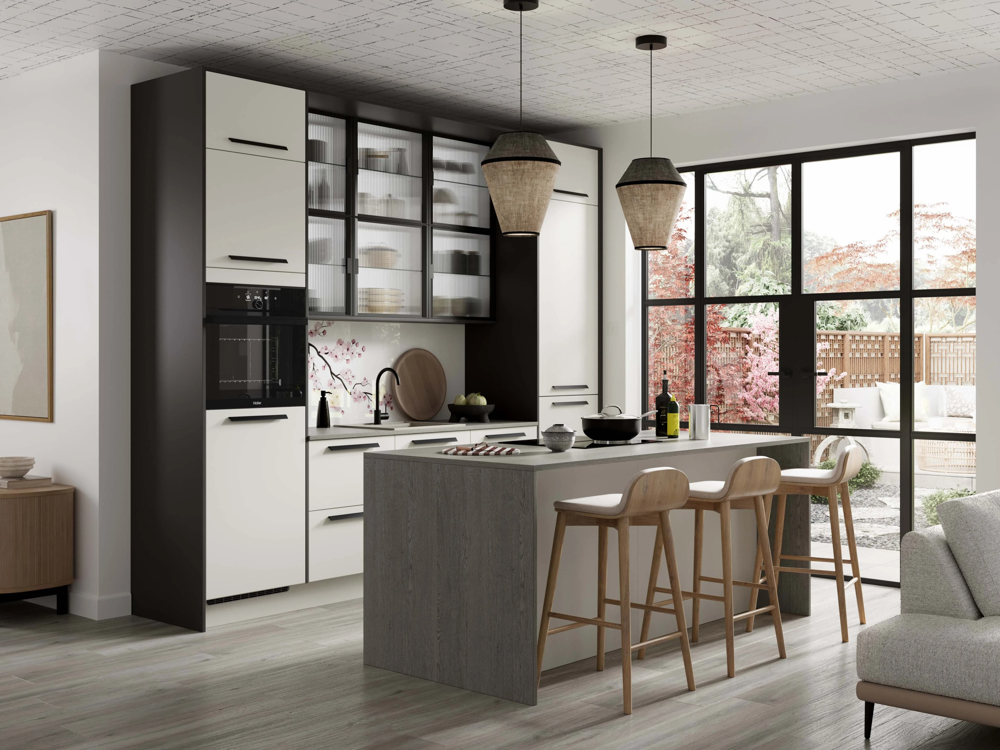

Advanced Renovation Solutions provides quality renovations to meet the personal lifestyle needs of the aging/disabled through residential construction and consulting. Founded by Byron Andrews, a certified Aging-in-Place specialist with the National Homebuilders Association, Advanced Renovation Solutions offers a wide array of disability solutions for the home, kitchen and bath.

For All Living Areas
We can remodel your home, designing the entire residence for safe indenpendent living for the elderly and those with a disability.
Wall and Doorway Expansion
Barrier-free building modifications so buildings or facilities can be used by the physically disadvantaged or disabled.
Access Ramps
We offer various types of access ramps buildings and vehicles.
Stair Lifts
Stair lifts are the perfect solution to mobility issues with your stairs, making your whole home accessible again.
Remove Door Openers with the Open-Sesame Door System
At the touch of a button, the Open-Sesame Door System operator gives you complete independence; it unlatches your locked door, then opens, pauses and closes it, all automatically.
For Your Bathroom
We specialize in remodeling bathrooms to be safe and beautiful, done in the most efficient and affordable manner. Proven way to add substantial value to your home.
Barrier Free Showers
We feature ADA (Americans with Disabilies Act) compliant accessibles roll-in showers.
Walk-in Bathtubs & TUBCUT(tm)
We carry a wide selection of specialty accessible bathtubs for the handicap, elderly, and people with disabilities.
The TUBCUT(tm) provides easier access for existing tubs by creating a step-through in the front of the tub.
Grab Bars
We provide quality, affordable grab bars and safety equipment to meet the needs of the physically challenged.
Overhead Lift Systems
Ceiling track systems to help ease lifting of heavy objects.


For Your Kitchen
We can make the kitchen a safe and accessible workspace for the elderly and disabled individuals, including those in wheelchairs.
Sink/Countertop Lowering
We provide flexible kitchen solutions that meet the requirements of all people - with or without disabilities. Our kitchens enable disabled persons to handle/participate in activites in the kitchen safely.
Automatic Faucet Controls
For those who have trouble adjusting the water temperature, turning the handles, or who may forget and leave the water running; the Automatic Faucet is just what the doctor ordered.
Complete Custom Kitchens
We are your one-stop place for custom kitchen design, cabinetry installation, and countertops. We offer complete remodelling services - have been designing beautiful kitchens for so many years.
About Us
What motivated Byron Andrews to start Advanced Renovation Solutions was not just the idea of making a profit, but the dire need of a dear family member. On July 4th, 1980, Byron pulled his brother from the bottom of a river, an accident that would ultimately leave his brother a quadriplegic.
After much research, Byron Andrews and his father realized that many construction companies were familiar with codes and regulations that met handicap specifications. So, Byron and his father took things into their own hands, and began building objects to help his brother get around the home, and eventually they decided to use their knowledge to extend help onto others with disabilites.
Today, Byron Andrews is one of the only few certified Aging in Place specialists in the state of Louisiana providing accessibility solutions for the aging and disabled, giving them the tools they need to live comfortably at home.
Contact Us
Location
Advanced Renovation Solutions LLC
21350 LA Highway 16
Denham Springs, Louisiana 70726
Phone
225-791-1911
Fax
225-667-7997
disabilitydesign@bellsouth.net